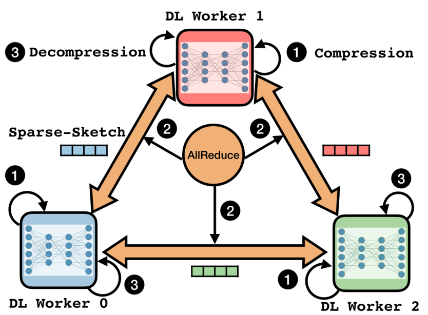
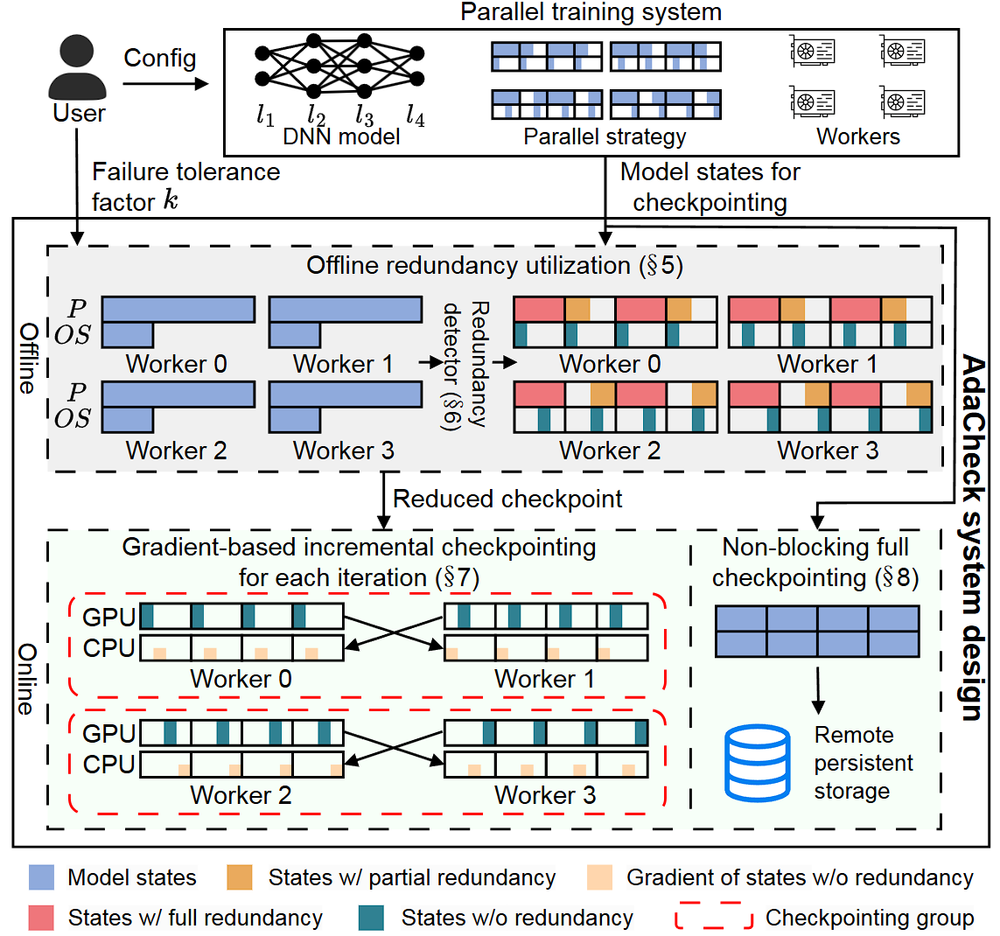
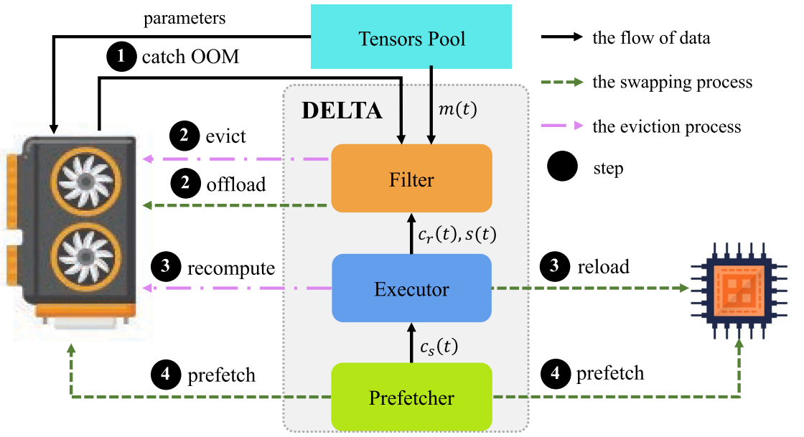

（二）大规模智能计算系统的异构并行架构
(1)存算网耦合的异构并行智能计算系统架构
大型智能模型训练成为计算、访存、通信密集的一类新型高性能计算应用，对并行计算架构提出了很大挑战。针对大型智能模型的计算/访存/通信特点，以及国产自主可控需求，项目设计了存算网耦合的异构并行智能计算系统架构，采用国产飞腾多核CPU和国产智能加速器作为计算单元，配置DDR内存和SSD高速本地存储，通过统一的硬件接口和高密度结构设计，实现了存储、计算加速等功能的高密度集成和灵活装配；设计了支持高速互连和以太网的双模高速自主互连网络架构，实现大规模的计算、存储资源的紧耦合互连，支撑计算/访存/通信密集的大规模智能计算。针对大型模型训练中高吞吐、大容量的数据访问需求，设计了集成分布式内存、分布式SSD存储、后备并行存储的多层次智能计算存储架构，设计了相应的存储管理软件，实现了多层次存储资源的数据存储空间分配和管理，平衡不同智能计算应用对存储带宽与存储容量的不同需求。针对大规模智能模型参数存储内存开销大、存储稳定性能要求高的问题，项目提出了一种面向模型参数存储的高效内存存储架构，及其数据容错和快速恢复机制，能够根据智能计算系统互连网络拓扑的特点加快数据恢复效率，提高模型参数访问性能。实验表明，与RAMCloud等技术相比，内存数据的恢复速度提升了10倍以上，且随着系统规模的增大，其性能优势越加明显。
(2)一种网络带宽感知的集合通信原语优化技术
大规模智能计算系统中，分布式应用的通信操作高度依赖广播和规约操作等基于MPI的集合通信原语。随着集群规模的扩张，广播等集合通信算法的性能瓶颈日益凸显。首先是带宽利用不均衡，多数方法未考虑现代集群中多级互连网络的带宽差异，导致高速链路未能充分利用；其次是扩展性受限，当节点数量增加时，传统二叉树或k叉树结构易在根节点附近形成流量热点，造成通信瓶颈，并且问题随着节点数量增加而进一步加剧。
项目研究提出了一种面向大规模异构网络的MPI集合通信优化技术BIO， 从拓扑结构、执行时序与网络感知三个维度进行协同优化。首先，BIO设计了一种动态可调的树拓扑，通过自适应调整各层的分支因子，使通信负载在不同层级间均衡分布，有效缓解根节点附近的流量拥塞。其次，为了突破集合操作中严格的层序依赖限制，BIO引入层间重叠机制，允许上层节点在转发数据的同时下层节点提前开始接收，从而将通信过程流水线化。同时BIO充分感知多级互连网络的带宽异构性，将数据通信划分为主任务与子任务，主任务优先通过高速链路传输关键数据块，子任务则利用低速链路并行处理剩余部分，实现全网带宽的高效协同利用。实验表明，相较于OpenMPI、MVAPICH2等主流MPI库的实现，BIO可以取得最高2.3倍的性能提升。
(3)一种基于稀疏草图的通信数据压缩技术
大规模分布式智能训练中，周期性的模型同步通信是制约系统可扩展性的关键瓶颈。随着参与训练的节点数量增加，网络总体通信流量近似线性增长，将拖慢整体训练效率。通信压缩技术仅传输数据的关键信息，从而显著减少了网络带宽的占用。然而，稀疏化方法虽能保留重要梯度分量却需要额外同步索引信息而引入新的通信负担，低秩近似虽通过结构简化压缩梯度但可能扭曲梯度方向影响模型收敛稳定性，当前的压缩技术难以兼顾高压缩率与模型收敛保障。

图1：基于稀疏草图的通信数据压缩技术S2Reducer
项目研究提出了一种融合稀疏表示与草图近似的通信压缩技术S2Reducer。如图 1所示，S2Reducer采用混合稀疏与草图表示对通信的梯度数据进行双重压缩，即先通过自适应阈值筛选出显著梯度分量予以精确保留，再将剩余大量小幅值梯度聚合后以计数草图形式进行紧凑近似，从而在极低通信开销下保留梯度的整体统计特性。此外，为确保训练收敛性，S2Reducer引入严格的误差控制机制，通过理论分析推导出压缩误差的上界，并据此动态调节稀疏率与草图容量，在压缩强度与模型精度之间实现自适应平衡。同时实现采用零拷贝设计，直接在通信缓冲区内完成压缩与聚合操作，规避了额外的数据移动开销。实验表明，与OmniReduce方法相比，S2Reducer可以减少约65%的通信时间，实现了1.8 倍的训练性能提高。该研究突破了梯度压缩方法在效率与精度的权衡困境，将稀疏选择与草图近似有机结合，为智能计算系统提供了实用高效的通信优化方案。
(4)一种面向分布式智能计算的数据去冗余技术
在分布式智能训练中，周期性的存储检查点是容错的核心。智能模型检查点的所需存储空间可达数TB，其数据的传输和写入将对持久化存储系统造成巨大压力。分布式计算本身蕴含了内在冗余，由于数据并行、模型并行或流水线并行等策略的引入，多个计算节点往往持有部分相同或可推导的模型检查点状态信息，若不加区分地全量保存，将导致大量重复数据被冗余写入，造成存储与带宽资源的双重浪费。

图2：冗余感知的智能模型检查点存储技术AdaCheck
为系统性应对这一问题，项目研究提出了一种冗余感知的自适应检查点存储技术AdaCheck。AdaCheck首先形式化定义了由不同并行策略和模型架构所引发的状态冗余，并将其建模为图结构上的遍历问题，从而为冗余识别提供理论基础。在此基础上，AdaCheck设计了高效的离线冗余检测机制，通过一致性哈希比对与环状通信算法，精准定位可安全省略的冗余数据，避免无效存储。为进一步压缩检查点体积，系统引入在线增量机制，仅记录优化器状态在训练步之间的变化量而非完整快照，大幅降低数据写入量。实验结果表明，AdaCheck可将智能模型的检查点体积缩减达6至896倍。该研究揭示并解决了分布式智能计算中的模型状态冗余问题，为大规模智能计算的高效容错提供了切实可行的创新路径。
(5)一种动态细粒度的异构数据交换技术
随着智能模型规模的高速增长，单个设备的存储空间已成为智能计算的重要瓶颈。以重计算和内存交换为代表的降低存储开销技术被相继提出，然而重计算通常以整层为单位进行粗粒度的保留或重计算决策，难以充分挖掘细粒度的内存节省空间，而内存交换技术多依赖简单的缓存替换策略，忽视了计算依赖关系，导致频繁且不必要的数据交换。同时这些方法往往被独立设计并使用，难以在有限硬件资源下实现性能与降低存储开销的联合最优。

图3：面向智能模型的动态细粒度重计算与交换技术DELTA
项目研究提出了一种面向智能模型的动态细粒度重计算与交换技术DELTA。DELTA将存储开销与计算性能的联合优化问题形式化为带约束的0/1背包问题，综合考虑每个张量数据的存储开销、重计算成本以及交换延迟，并通过高效的贪心算法求解出全局近优的策略组合。在此基础上，DELTA设计了双向预取机制，通过在异构多级存储之间建立协同管理的 FIFO 队列，使数据交换与计算过程高度重叠，有效隐藏通信延迟。同时DELTA的细粒度决策引擎突破了以模型层为单位的优化粒度，能够基于存储开销、计算开销与交换开销，对每个张量独立决策最优存储策略，从而在保障计算效率的同时最大化存储利用率。实验表明，DELTA相比于DTR、POET等方法，可将存储占用至多降低72.3%并维持超过90% 的扩展效率。该研究将重计算与内存交换技术统一于同一框架下，通过细粒度决策显著提升了单设备存储利用效率，为大规模的智能应用提供了关键技术支撑。
相关部分论文列表:
- Weijie Liu, Shengwei Li, Zhiquan Lai, Keshi Ge, Peng Sun, Qiaoling Chen, Kai Lu, Dongsheng Li. AdaCheck: An Adaptive Checkpointing System for Efficient LLM Training with Redundancy Utilization. USENIX FAST 2026.
- Yi Dai, Kai Lu, Sheng Ma, Jinshu Su, Dongsheng Li. Bubble-Swap Flow Control. ACM TACO 2025.
- Keshi Ge, Kai Lu, Yongquan Fu, Xiaoge Deng, Zhiquan Lai, Dongsheng Li. Compressed Collective Sparse-Sketch for Distributed Data-Parallel Training of Deep Learning Models. IEEE JSAC 2023.
- Yu Tang, Qiao Li, Lujia Yin, Dongsheng Li, Yiming Zhang, Chenyu Wang, Xingcheng Zhang, Linbo Qiao, Zhaoning Zhang, Kai Lu. DELTA: Memory-Efficient Training via Dynamic Fine-Grained Recomputation and Swapping. ACM TACO 2024.